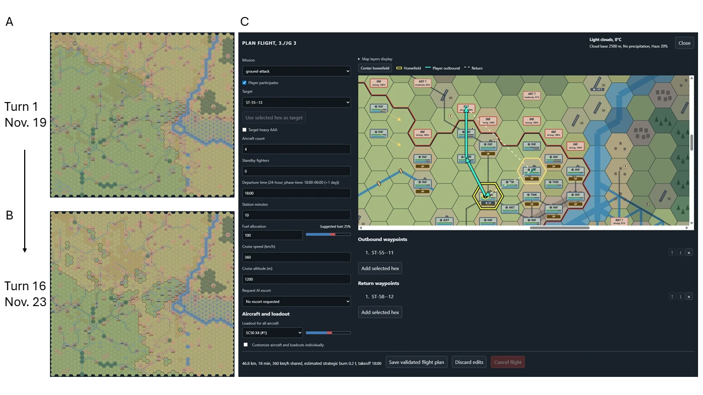

Tutorial
How to install I2DC, set up IL-2, and play your first mission.
Getting started
1. Download and extract
Download the ZIP from the Download page, extract the whole folder anywhere, and double click IL-2 Dynamic Campaign.exe. Nothing needs to be installed, and the folder does not need to be inside IL-2.
Placeholder. Add a screenshot of the extracted folder and the Windows warning.
2. Turn on mission reports
Mission reports need IL-2 mission text logs. In IL-2\data\startup.cfg, under [KEY = game], set:
mission_text_log = 1Restart IL-2 after making the change.
3. Choose the IL-2 folder
In the app, open Configuration and choose your IL-2 data folder, for example:
C:\Program Files (x86)\Steam\steamapps\common\IL-2 Sturmovik Battle of Stalingrad\data4. Restart IL-2 after your first mission
After your first mission is compiled, restart IL-2 once. IL-2 only finds a new mission folder when the game starts. The mission is then available under Missions, in the DynamicCampaign folder.
The campaign loop
- Start a campaign.
- Optional: check on your HQ, inspect the map, and look at the AI flight orders.
- Plan your mission under "Plan / edit player flight".
- Resolve turn.
- If your mission happens, a mid-turn pause triggers. Compile the mission.
- Fly the mission in IL-2. Optionally, open the navigation map full screen on a second monitor.
- Read and accept the mission report.
Main screens
Plan or edit a flight
You manage your unit and plan your flights within the war. Flight plans respond to the intelligence available to you, so a deep strike needs planning that avoids known defensive positions and enemy activity.

Navigation map
Placeholder. Explain the generated navigation chart, how it is installed with the mission, and the full screen view.
HQ
Placeholder. Explain pilots and fatigue, aircraft replacements, and shared airfield requests.
AI orders
AI commanders issue ground and air orders based on the reconnaissance and intelligence available to them. Operational orders describe what the AI is trying to achieve in a given period.
Placeholder. Explain how to read the AI flight orders and what the player can and cannot control.
Mission report
After flying, finish the sortie in IL-2 and exit it, then read the mission report in the app, review it, and accept it. The turn then continues.
Common issues
- If "Windows protected your PC" shows up, choose "More info", then "Run anyway".
- I2DC renders many objects and can push the IL-2 engine hard. If the game runs too slowly, lower the "Mission detail" setting under Configuration, or adjust the settings individually.
- If mission compilation worked but you do not see the mission in IL-2, restart IL-2 first. IL-2 only scans for new folders when it starts.